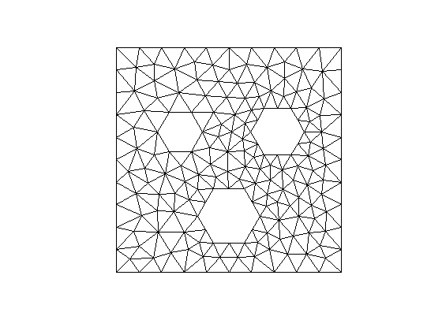

GUIDE 1 - every FE computation starts with a mesh
Ondrej Budac, 2014
We describe how to start the ANMC-FE package and create, manipulate and display some basic (structured) meshes.
Contents
Running the code
To succesfully start running this FE package, you need to add all the files within the main directory and subdirectories to your path. You can do it easily by running the script setpath.m. This script sets a global variable global_options which is a structure that can contain some information about other, non-Matlab software as Gmsh (meshing) and AGMG (algebraic multirid preconditionner), which can be used within Matlab.
First mesh
Let us start by creating a simple mesh. ANMC FE supports only simplicial meshes but they can be of any dimension. Let us start with a structured mesh. We can type
mesh = structured_mesh([0,1,0,2], [2,3])
mesh =
periodic: 0
node: [12x2 double]
elem: [12x3 double]
This command created a two dimensional mesh on a rectangle [0,1] x [0,2] with 2+1 nodes in the x-direction and 3+1 nodes in the y-direction. In fact, it first created a regular rectangular grid of dimensions 2 x 3 and then dissected each small rectangle into two triangles. Before we describe how the mesh is saved, let us display it.
simpplot(mesh); % format output axis on; xlim([-0.2,1.2]); ylim([-0.2,2.2]); snapnow;
A mesh is always a structure with two obligatory fields.
- mesh.node is an array of size N x d that stores N nodes in a d-dimensional space.
- mesh.elem is an array of size NT x (dim+1) that stores NT sets of node numbers of size dim+1 that describe dim+1 vertices of a dim-dimensional simplex.
Let us display these two fields. Since we are in two dimensions and the mesh is triangular, we have dim = d = 2. As for the number of nodes and elements, you can count N = 12 and NT = 12. The equal number of nodes and elements is a coincidence.
mesh.node
ans =
0 0
0.500000000000000 0
1.000000000000000 0
0 0.666666666666667
0.500000000000000 0.666666666666667
1.000000000000000 0.666666666666667
0 1.333333333333333
0.500000000000000 1.333333333333333
1.000000000000000 1.333333333333333
0 2.000000000000000
0.500000000000000 2.000000000000000
1.000000000000000 2.000000000000000
mesh.elem
ans =
5 1 2
1 5 4
6 2 3
2 6 5
8 4 5
4 8 7
9 5 6
5 9 8
11 7 8
7 11 10
12 8 9
8 12 11
For a better picture of the situation, we give a more detailed plot that displays the node numbers and element numbers.
simpplot(mesh,struct('nodenum',true,'elemnum',true)); axis on; xlim([-0.2,1.2]); ylim([-0.2,2.2]); snapnow;
Mesh modification. There are many ways to modify mesh:
- Directly changing the poistion of nodes or remove/add elements.
- Mesh refinement: Subdividing elements into subelements
Let us remove the elements number 7 and 8 from mesh. Since removing them won't cause "unused nodes", we can simply use
mesh.elem([7 8], :) = [];
Further, let us move the nodes 6 and 9 a little
mesh.node([6, 9],2) = [0.8, 1.2]; % display the mesh clf; simpplot(mesh,struct('nodenum',true,'elemnum',true)); % set axes axis on; xlim([-0.2,1.2]); ylim([-0.2,2.2]); snapnow;
There are several techniques for mesh refinement. One can ask for refinement of a subset of elements. There are algorithms to subdivide them and make sure (by some additional subdivisions) that the resulting mesh is conforming. Suppose that we want to subdivide elements 2 and 5. We simply type
% bisect mesh mesh_bis = bisect(mesh,[2,5]); % display it clf; simpplot(mesh_bis, struct('nodenum',true,'elemnum',true)); % set axes axis on; xlim([-0.2,1.2]); ylim([-0.2,2.2]); snapnow;
To achieve good quality of the resulting mesh and conformity, two more triangles were refined. If one would like to refine all elements to get a finer mesh, preferable solution is to use
% uniformly refine mesh mesh_uni = uniformrefine(mesh); % display it clf; simpplot(mesh_uni, struct('nodenum',true,'elemnum',true)); % set axes axis on; xlim([-0.2,1.2]); ylim([-0.2,2.2]); snapnow;
Mesh statistics
There are many low-level mesh operations that you can follow in the later guides. For simplicity, let us start with some higher level operations. We will work with the non-refined mesh.
Simplex volume. To compute volume (in 2D just area) of every element, we simply type
volume = simplex_volume(mesh)
volume = 0.166666666666667 0.166666666666667 0.200000000000000 0.166666666666667 0.166666666666667 0.166666666666667 0.166666666666667 0.166666666666667 0.200000000000000 0.166666666666667
Simplex volume. To compute diameter of every element, we simply type
diam = simplex_diameter(mesh)
diam = 0.833333333333333 0.833333333333333 0.943398113205660 0.943398113205660 0.833333333333333 0.833333333333333 0.833333333333333 0.833333333333333 0.833333333333333 0.833333333333333
Simplex quality. Another interesting property of a simplex is quality of its elements. To obtain a normalized ratio of the inscribed and circumscribed sphere (circle) of every simplex, we can simply type
qual = simplex_quality(mesh)
qual = 0.800000000000000 0.800000000000000 0.755994488016536 0.641873275816140 0.800000000000000 0.800000000000000 0.800000000000000 0.800000000000000 0.862546987745628 0.800000000000000
1D mesh
The linear structure of 1D mesh (just line segments) allows for a simpler storage than the standard node-element approach in higher dimensions. Nevertheless, for greater compatibility, we didn't optimize this part and 1D meshes look exactly like 2D meshes:
mesh_1D = structured_mesh([0,1], 3) mesh_1D.node mesh_1D.elem clf; simpplot(mesh_1D, struct('nodenum',true,'elemnum',true)); snapnow;
mesh_1D =
node: [4x1 double]
elem: [3x2 double]
periodic: 0
ans =
0
0.333333333333333
0.666666666666667
1.000000000000000
ans =
1 2
2 3
3 4
3D mesh
Analogously, we can create a 3D structured mesh. Here, a parallelpiped is divided into a cuboid grid and each cuboid is then divided into six tetrahedra.
mesh_3D = structured_mesh([0,1,0,1,0,1], [3,4,5]) clf; simpplot(mesh_3D); snapnow;
mesh_3D =
periodic: 0
node: [120x3 double]
elem: [360x4 double]
Different grid subdivision
In some FE cases, triangles are not allowed to touch the boundary with two sides at once. To avoid this problem, we created a different subdivision algorithm for structured meshes:
mesh_2Dc = structured_mesh([0,1,0,1], [5,6], struct('centre',true)); clf; simpplot(mesh_2Dc); axis on; xlim([-0.2,1.2]); ylim([-0.2,1.2]); snapnow;
The same can be applied to 3D meshes, where each cuboid is then divided into 12 tetrahedra, each sharing just one side with the original cuboid.
Periodic Mesh
To avoid common problems with periodic boundary conditions, periodic meshes are deep in the implementation of ANMC FE.
% create periodic mesh mesh_per = structured_mesh([0,1,0,1],[3,3], struct('periodic',true)) % display it clf; simpplot(mesh_per, struct('nodenum',true,'elemnum',true)); % add axes axis on; xlim([-0.2,1.2]); ylim([-0.2,1.2]); snapnow;
mesh_per =
periodic: 1
box: [0 1 0 1]
node: [9x2 double]
elem: [18x3 double]
You can see that the mesh has some nodes displayed at several places. How is this mesh then saved? Simply, we save each node exactly at one place
mesh_per.node
ans =
0 0
0.333333333333333 0
0.666666666666667 0
0 0.333333333333333
0.333333333333333 0.333333333333333
0.666666666666667 0.333333333333333
0 0.666666666666667
0.333333333333333 0.666666666666667
0.666666666666667 0.666666666666667
Now let us take the element number 5 with nodes
node5 = mesh_per.elem(5,:)
node5 =
4 3 1
and their coordinates, as saved
coor = mesh_per.node(node5,:)
coor =
0 0.333333333333333
0.666666666666667 0
0 0
These coordinates, compared to the picture above, are obviously wrong. If a mesh is periodic, this code tries to move the nodes within their periodic orbits such that the resulting triangle is the smallest possible and that it lies within the periodic box. This brings us to the very important rule:
FOR ANY PERIODIC MESH, ANY VECTOR REPRESENTING AN EDGE IN A SIMPLEX NEEDS TO HAVE ALL COORDINATES SMALLER THAN THE SIZE OF THE PERIODIC BOX IN THAT DIRECTION
Hence, you'll get an error when trying to call too coarse periodic mesh creation via structured_mesh([0,1,0,1],[3,2], struct('bc','periodic'))
Other mesh generators
There are several more ways to construct meshes. If you have Gmsh installed and it is set in the global_options variable, you can run the following example. More details about Gmsh and its interface to matlab are described in another tutorial.
global global_options; if isfield(global_options,'gmsh') && ~isempty(global_options.gmsh) % define mesh geometry shift1 = 0.25*[-sqrt(3)/2,1/2]; shift2 = 0.25*[sqrt(3)/2,1/2]; shift3 = 0.25*[0,-1]; hole_shape = [1,0; 1/2, -sqrt(3)/2; -1/2, -sqrt(3)/2; -1,0; ... -1/2, sqrt(3)/2; 1/2, sqrt(3)/2]; %regular hexagon holes{1} = bsxfun(@plus, hole_shape*0.1, shift1); holes{2} = bsxfun(@plus, hole_shape*0.12, shift2); holes{3} = bsxfun(@plus, hole_shape*0.14, shift3); % generate BD GEOMETRY [bdmesh, bdgmsh]= geom2D_gen_polyg_holes(holes); options.lc = 0.1; mesh_gmsh = gmsh(bdgmsh, options); clf; simpplot(mesh_gmsh); xlim([-0.6,0.6]); ylim([-0.6,0.6]); snapnow; end
Examples
Here we give some more examples of meshes
L-shape. An L-shape mesh can be easily generated as follows:
mesh_L = structured_mesh([-1,1,-1,1],[2,2]); mesh_L.node(9,:) = []; mesh_L.elem([7 8],:) = []; clf; simpplot(mesh_L); xlim([-1.2,1.2]); ylim([-1.2,1.2]); snapnow;
Half-periodic pipe.
mesh_pipe = structured_mesh([0,1,0,1],[3,3], struct('periodic',true));
mesh_pipe.elem([5,6,11,12,17,18],:) = [];
clf; simpplot(mesh_pipe);
xlim([-0.2,2/3+0.2]); ylim([-0.2,1.2]); snapnow;
Skewed mesh
mesh_rot = structured_mesh([0,1,0,1],[10,10]); mesh_rot.node=mesh_rot.node*[cos(pi/6), sin(pi/6); -sin(pi/6), cos(pi/6)]; clf; simpplot(mesh_rot); snapnow;